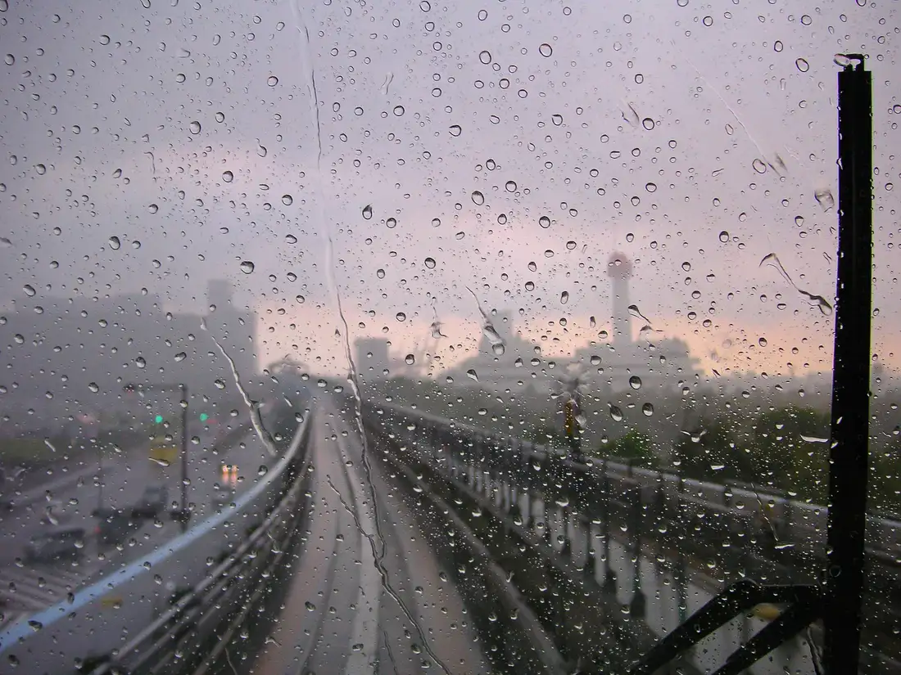
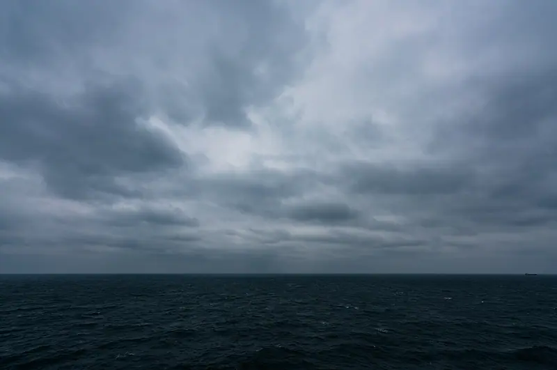
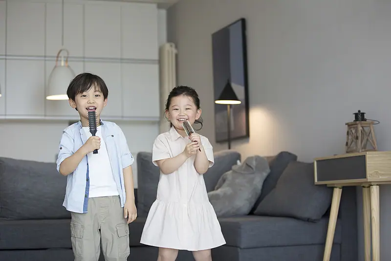
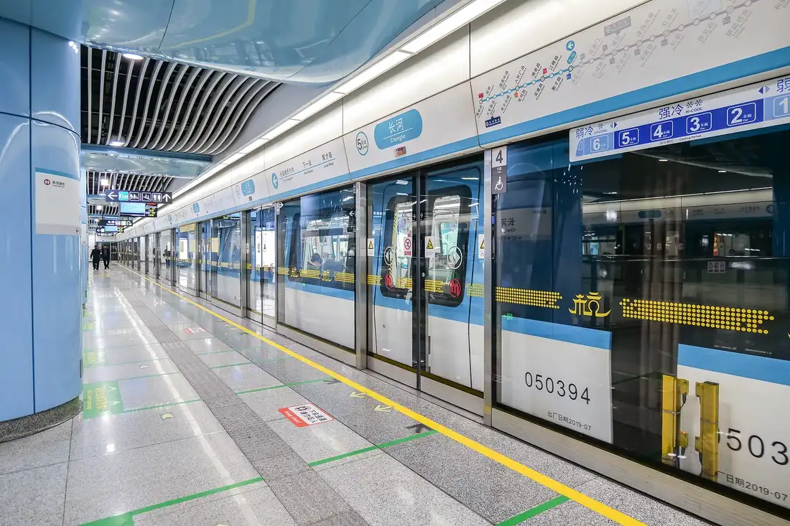
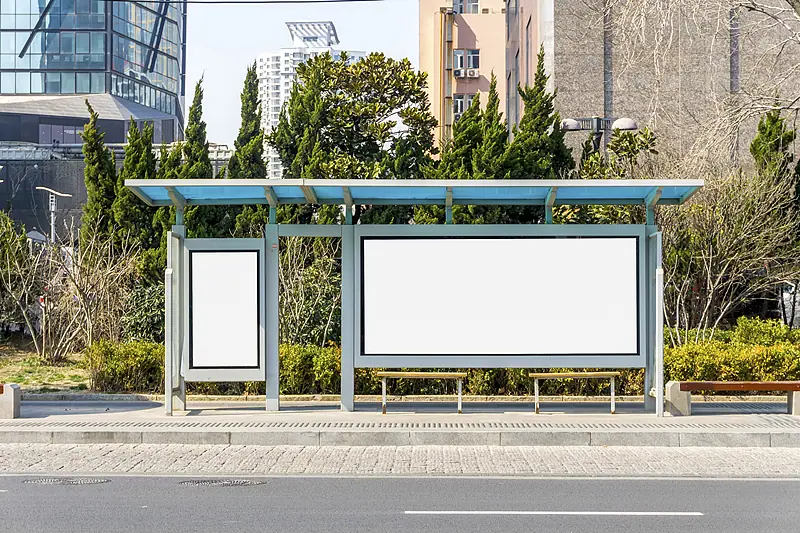

Giáo trình HSK 2 · Lesson 12这里比北京冷多了
Zhèlǐ bǐ Běijīng lěng duō le
Ở đây lạnh hơn Bắc Kinh nhiều.
Mục tiêu bài khóa
Sau bài học, người học có thể nói về thời tiết, so sánh và mô tả mức độ của hành động.
天气情况Nói về trời nắng, âm u, lạnh và tuyết rơi.
动作状态之间的差别So sánh sự khác nhau về trạng thái hoặc mức độ hành động.
比较句Sử dụng câu so sánh với 比, 得 và bổ ngữ mức độ.
Khởi động · 热身
Chọn một từ, sau đó chọn đúng hình ảnh tương ứng.
💡 Hãy chọn một từ trước.
Từ vựng · 生词
Mặt trước có từ, nghĩa, loại từ và nút phát/dừng. Mặt sau dùng hình ảnh và câu ví dụ từ PPT.
事情
shìqing
chuyện; việc; sự tình
danh từChạm vùng trống để lật thẻ
你有什么事情要告诉我吗？ 🔊Nǐ yǒu shénme shìqing yào gàosu wǒ ma?
Bạn có chuyện gì muốn nói với tôi không? 他因为工作上的事情不高兴。 🔊Tā yīnwèi gōngzuò shàng de shìqing bù gāoxìng.
Anh ấy không vui vì chuyện công việc. 晴
qíng
trời trong; quang; tạnh ráo
tính từChạm vùng trống để lật thẻ
天晴了，我们出去玩吧。 🔊Tiān qíng le, wǒmen chūqù wán ba.
Trời đã tạnh rồi, chúng ta ra ngoài chơi đi. 这两天都是阴天，明天就是晴天了。 🔊Zhè liǎng tiān dōu shì yīntiān, míngtiān jiù shì qíngtiān le.
Hai ngày nay đều âm u, ngày mai trời sẽ nắng. 正
zhèng
đang; vừa
phó từChạm vùng trống để lật thẻ
爸爸正在睡觉，你们出去玩吧。 🔊Bàba zhèngzài shuìjiào, nǐmen chūqù wán ba.
Bố đang ngủ, các bạn ra ngoài chơi đi. 我正给他打电话呢。 🔊Wǒ zhèng gěi tā dǎ diànhuà ne.
Tôi đang gọi điện cho anh ấy. 外面
wàimiàn
bên ngoài; phía ngoài
danh từChạm vùng trống để lật thẻ

外面有个人找你。 🔊Wàimiàn yǒu gè rén zhǎo nǐ.
Bên ngoài có một người tìm bạn. 外面下雨了，不要出去。 🔊Wàimiàn xiàyǔ le, bú yào chūqù.
Bên ngoài đang mưa rồi, đừng ra ngoài. 阴
yīn
âm u; nhiều mây; râm
tính từChạm vùng trống để lật thẻ

外面很阴，没有太阳。 🔊Wàimiàn hěn yīn, méiyǒu tàiyáng.
Bên ngoài trời âm u, không có mặt trời. 我喜欢阴天。 🔊Wǒ xǐhuan yīntiān.
Tôi thích trời âm u. 从小
cóngxiǎo
từ nhỏ; từ bé
phó từChạm vùng trống để lật thẻ

我从小就喜欢唱歌。 🔊Wǒ cóng xiǎo jiù xǐhuan chànggē.
Tôi từ nhỏ đã thích hát. 他从小就很聪明。 🔊Tā cóng xiǎo jiù hěn cōngmíng.
Anh ấy từ nhỏ đã rất thông minh. 地铁
dìtiě
tàu điện ngầm
danh từChạm vùng trống để lật thẻ

从这儿去天安门，坐地铁要二十分钟。 🔊Cóng zhèr qù Tiān’ānmén, zuò dìtiě yào èrshí fēnzhōng.
Từ đây đi Thiên An Môn bằng tàu điện ngầm mất 20 phút. 这儿离地铁站很远，你坐公交车去吧。 🔊Zhèr lí dìtiě zhàn hěn yuǎn, nǐ zuò gōngjiāochē qù ba.
Ở đây cách ga tàu điện ngầm rất xa, bạn đi xe buýt nhé. 楼
lóu
nhà lầu; tòa nhà
danh từChạm vùng trống để lật thẻ
北京有很多高楼。 🔊Běijīng yǒu hěn duō gāolóu.
Bắc Kinh có rất nhiều tòa nhà cao tầng. 我在楼下等你。 🔊Wǒ zài lóuxià děng nǐ.
Tôi đang đợi bạn dưới lầu. 站
zhàn
trạm; ga
danh từChạm vùng trống để lật thẻ

请在公交站等我。 🔊Qǐng zài gōngjiāo zhàn děng wǒ.
Xin hãy đợi tôi ở trạm xe buýt. 从这里到学校要坐三站地铁。 🔊Cóng zhèlǐ dào xuéxiào yào zuò sān zhàn dìtiě.
Từ đây đến trường phải đi 3 trạm tàu điện ngầm. 小时候
xiǎoshíhou
hồi nhỏ; thời thơ ấu
danh từChạm vùng trống để lật thẻ
我小时候很喜欢画画。 🔊Wǒ xiǎoshíhou hěn xǐhuan huàhuà.
Lúc nhỏ tôi rất thích vẽ tranh. 他小时候住在北京。 🔊Tā xiǎoshíhou zhù zài Běijīng.
Lúc nhỏ anh ấy sống ở Bắc Kinh. 好
hǎo
rất
phó từChạm vùng trống để lật thẻ
这个苹果好甜。 🔊Zhège píngguǒ hǎo tián.
Quả táo này rất ngọt. 我好喜欢中国菜。 🔊Wǒ hǎo xǐhuan Zhōngguó cài.
Tôi rất thích món ăn Trung Quốc. Bài khóa · 课文
Ảnh ngữ cảnh bên trái, nội dung bên phải; bài 4 hiển thị đúng dạng đoạn văn đọc.
Tương tác đóng vai
Chọn bài khóa và vai. Lời của vai đã chọn sẽ được ẩn; chỉ hiển thị chữ Hán, không pinyin và nghĩa.
Củng cố từ vựng
Lật đáp án từ vựng rồi hoàn thành câu hỏi đọc hiểu.
Câu hỏi đọc hiểu
Mẫu câu cần nhớ: 这里比北京冷多了。你跑步跑得比我快。外边正下着雪呢。